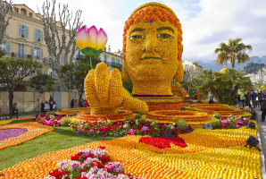
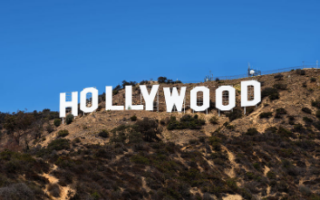
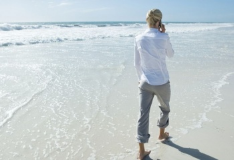
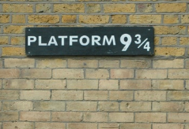
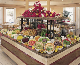

08/02/19 С 16 февраля по 3 марта
во французском городе–курорте Ментона пройдет 86–й по счету Лимонный фестиваль Fête du Citron. Гостей ждут
красочные парады и скульптуры из цитрусов. В 2019 году темой Fête du Citron станут «Фантастические миры».
Откроется фестиваль выставкой лимонов, на которой посетителям представят гигантские скульптуры из цитрусовых.
На создание одной такой конструкции обычно уходит около 15 тонн лимонов. Кроме того, посетителей ждут ярмарка
местных ремесел и фестиваль орхидей. В вечернее время гостей приглашают посетить Сад огней. Здесь скульптуры из
лимонов уже предстанут в другом виде — с подсветкой.
Все 15 дней участников фестиваля ждет насыщенная программа с красочными шествиями акробатов, музыкантов,
пожирателей огня и ходулистов. Все мероприятия объединены темой лимонов и всем, что с ними связано. Вход на
праздник платный, стоимость билетов начинается от 10 евро. Ежегодно фестиваль посещают около 200 000 человек.
Ментона — город–курорт на Лазурном Берегу в 30 километрах от Ниццы. Благодаря мягкому климату урожаи лимонов здесь
собирают трижды в год. Помимо фестиваля Fête du Citron, туристы могут посетить многочисленные городские сады и парки.
Чтобы добраться до французского курорта из Москвы, сначала необходимо долететь до Ниццы. Из местного аэропорта до
Ментона каждый час курсирует автобус. Дорога из Ниццы займет около 1,5 часов.
06/02/19 Эксперты подсчитали стоимость жилья вблизи известных туристических
достопримечательностей и составили список самых дорогих районов в мире. В рейтинге
аналитики оценили стоимость недвижимости на расстоянии примерно в 1,5 км от 20 самых
посещаемых достопримечательностей по сравнению с жильем в отдалении от этих популярных
туристических мест. Так, например, желающим жить возле знаменитого знака Hollywood
придется заплатить за жилье примерно $1,5 млн, что на 1057% выше стоимости домов в
любом другом районе Лос-Анджелеса. Это сделало Голливудские холмы лидером рейтинга
самых дорогих достопримечательностей.
На втором месте оказался небоскреб Бурдж-Халифа в Дубае. Жилье рядом с самым высоким зданием
мира (его высота 828 м) обойдется в $1 млн, что на 687% дороже недвижимости в других районах
города. Замкнул тройку лидеров обелиск Вашингтону, располагающийся между Капитолием и Белым
домом. Недвижимость рядом с этим монументом на 678% дороже, чем где-либо еще в столице США,
и стоит порядка $2,5 млн. В топ-10 также вошли Сиднейский оперный театр (он увеличивает
стоимость недвижимости рядом на 459%), Эйфелева башня (334%), музей Гуггенхейма в Бильбао
(171%), мост Золотые Ворота в Сан-Франциско (264%). Также в список попали Бранденбургские
ворота в Берлине, итальянская Пизанская башня и лондонский Биг Бен. Единственная
достопримечательность, рядом с которой жилье обойдется дешевле, чем в других районах города
, — это римский Колизей. Хотя разница в цене всего 0,1%.
новые направления
 Жизнь в 21 веке связана
с большими скоростями, необходимостью общаться с большим количеством различных людей. Все это приводит
к тому, что многие начинают испытывать необходимость в кардинальных переменах. В связи с этим в последние
годы стали появляться новые направления в туризме. Среди необычных предложений для хорошего отдыха можно
выделить несколько самых популярных. В первую очередь туристы активно пользуются возможностью попасть
в еще неосвоенные районы земного шара. Конечно, это несбыточная мечта, однако туристические компании позволяют
создать хотя бы иллюзии отдыха в необитаемом пространстве. Такие странствия получили название "путешествие
дикарем".
В частности, отдохнуть в окружении не огромной толпы разноговорящих людей, а в тесном соседстве с природой,
еще можно в таких уголках земного шара, как Центральная Америка (Гватемала и Гондурас), Колумбия и Таити,
Фиджи. На этих и других островах одиноких туристов ждет настоящий рай - белоснежные пляжи, сочное кокосовое
молоко, изобилие фруктов и возможность получить полноценную релаксацию. Если раньше Гондурас считался страной,
куда небезопасно отправляться, то сегодня процент преступности там заметно снизился. Активно развиваются
и туристические маршруты в Таиланд и Вьтенам. Несмотря на то, что они уже хорошо освоены, большое количество
островов позволяет найти место, где можно остаться практически в одиночестве. Тем, кто не боится столкнуться
с преступностью, туристические компании предлагают туры в богатые археологическим наследием Иорданию и Сирию.
Более того, если вы путешествуете не с экскурсионной группой, вам легче будет открыть для себя эти страны,
познакомиться с настоящим местным колоритом, а не с его адаптированной под иностранных гостей версией.
Возможность изнутри узнать об обычаях и традициях других стран также является одним из популярных новых
направлений в туризме. Если вашей целью является получение большой дозы адреналина, вам больше понравятся
предложения, связанные с возможностью совершить настоящее приключения. Туристические клубы разрабатывают
авторские маршруты с походами в горы, сплавами. Это и конные походы, и ралли на джипах, и многое другое.
Они рассчитаны на людей с разной степенью подготовки: существуют группы для новичков и профессионалов. Это
туристическое направление отличает возможность найти единомышленников: в будущем вы с высокой вероятностью
отправитесь в поход уже не с незнакомыми людьми, но с новыми друзьями. Отдых словно станет частью вашей жизни:
вы начнете встречаться со знакомыми, придумывать кратковременные вылазки, устраивать совместные чаепития.
Нельзя не сказать и о таком новом направлении в туризме, как военный туризм. На земле осталось немало
свидетельств о сражениях. Это и крепости, и известные дома, восстановленные сцены битв, и музеи, хранящие
документальные подтверждения, и многое другое. Люди стремятся пролистать кровавые страницы мировой истории,
узнать больше о своем прошлом.
 Современная индустрия
туризма предлагает путешественникам интересное направление - кинотуризм. Пожалуй, многим из нас
хотелось бы воочию увидеть те места, где велись съемки наших любимых киношедевров, прогуляться по
знакомым улицам и посетить заведения, которые посещали любимые герои и героини. Отправиться по следам
любимых героев сегодня может каждый. Развитие такого направления как кинотуризм началось
сравнительно недавно. Многие утверждают, что первой «струей» кинотуризма стали путешествия по местам
съемок культовой саги об отважном Гарри Поттере. Миллионы поклонников книг Джоан Роллинг и снятых впоследствии
фильмов готовы выложить целое состояние на то, чтобы погрузиться в атмосферу магии и чародейства.
В Англии фанаты мальчика-волшебника могут посетить Королевскую школу, которую декораторы превратили
в школу Хогвартс, знаменитый вокзал Кингс-Кросс, с которого отправлялся поезд с учениками и прочие
известные места.
Причиной невероятного потока туристов в Новую Зеландию стали съемки трилогии «Властелин Колец» Толкиена.
Фанаты-толкиенисты здесь могут посетить более 150 локаций с оригинальными декорациями со съемки:
городок хоббитов Хоббитон, Мордор, отстроенный на территории национального парка Тонгариро, Изенгард
в парке Маунт Эспайринг и прочее. Кроме того, бескрайние луга и поля Новой Зеландии активно посещают
фанаты фильмов про волшебную страну Нарнию. Еще одним популярным направлением кинотуризма стал
небольшой городок Форкс в штате Вашингтон. Дело в том, что именно здесь были сняты многие сцены первого
фильма саги «Сумерки». После выхода фильма на экраны поток туристов в эти места увеличился практически
вдвое. Тут фанаты «Сумерек» могут прочувствовать всю атмосферу фильма - они могут посетить школу, где
учились главные герои, выпить бокал вина в том же самом ресторане, в котором Белла и Эдвард провели свое
первое свидание и так далее. Среди американских городов самым привлекательным местом для
кинотуризма является, конечно же, Нью-Йорк. Именно в этом большом городе вы сможете воочию лицезреть
знаменитое здание Empire State Building, на которое взбирался Кинг-Конг в культовом фильме 1933 года
и в последующих римейках. В Нью-Йорке вы сможете погулять по улицам, по которым ходили Кэрри, Саманта,
Миранда и Шарлотта и популярного сериала «Секс в большом городе», посетить «квартиру» Кэрри и ее любимые
магазины обуви. Среди других мест, интересных с точки зрения кинотуризма, стоит упомянуть Париж.
После выхода на экраны фильма «Код Да Винчи» число желающих побродить по коридорам Лувра возросло в
несколько раз! Фанаты «Звездных войн» могут отправиться в путешествие в Тунис в самое сердце пустыни
Сахары, где снимался один из эпизодов культового фильма. Кстати, в Тунисе также проходили съемки одного
из фильмов про приключения Индианы Джонса.
туристу

OB (Only Bed), RO (Room Only) или AO (Accommodation Only) подразумевает
размещение в номере отеля без питания.
BB (Bed and Breakfast) означает бесплатное питание только во
время завтраков – Континентальный завтрак или Шведский стол.
HB (Half Board) означает полупансион, то есть бесплатное двухразовое
питание – завтрак и ужин.
HB+ (Half Board plus) – это расширенный полупансион, с той лишь
разницей, что помимо завтрака и ужина в стоимость включены спиртные
напитки местного производства.
FB (Full Board) означает полный пансион, включающий в себя завтраки,
обеды и ужины.
FB+ (Full Board plus) – то же, что и FB, плюс бесплатные алкогольные
напитки в течение всего дня.
AI (All Inclusive) переводится как «Все включено»: завтрак, обед и
ужин; различные алкогольные и безалкогольные напитки (обычно местного
производства); дополнительное питание (второй завтрак, закуски, полдник).
UAI (Ultra All Inclusive) отличается от AI тем, что постояльцам
предлагаются не только местные, но и импортные алкогольные и
безалкогольные напитки в неограниченном количестве.

.png "facebook")
.png "vkontakte")
.png "twitter")
.png "skype")